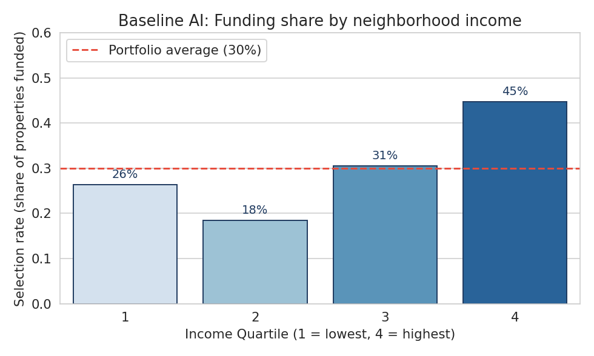
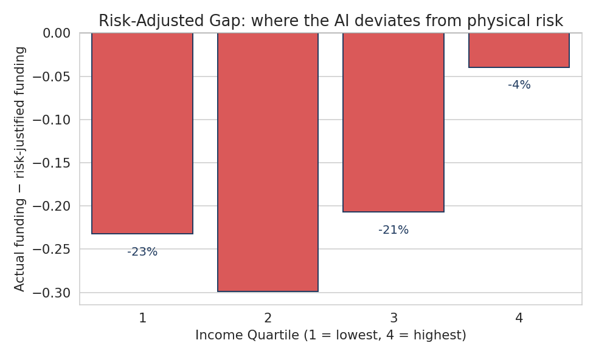
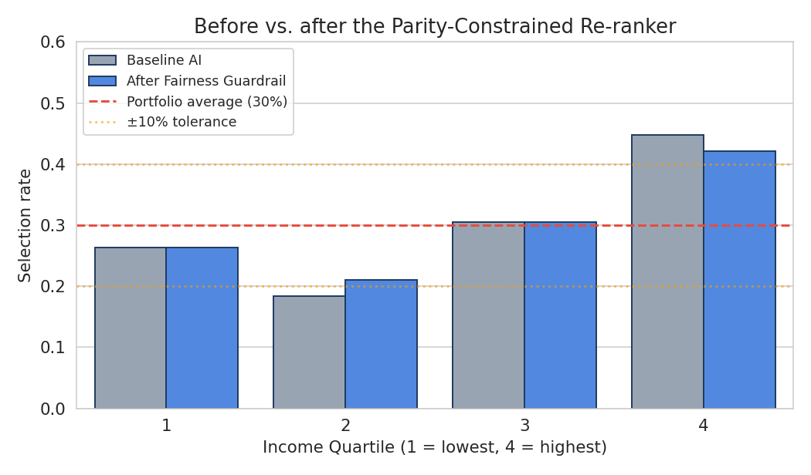
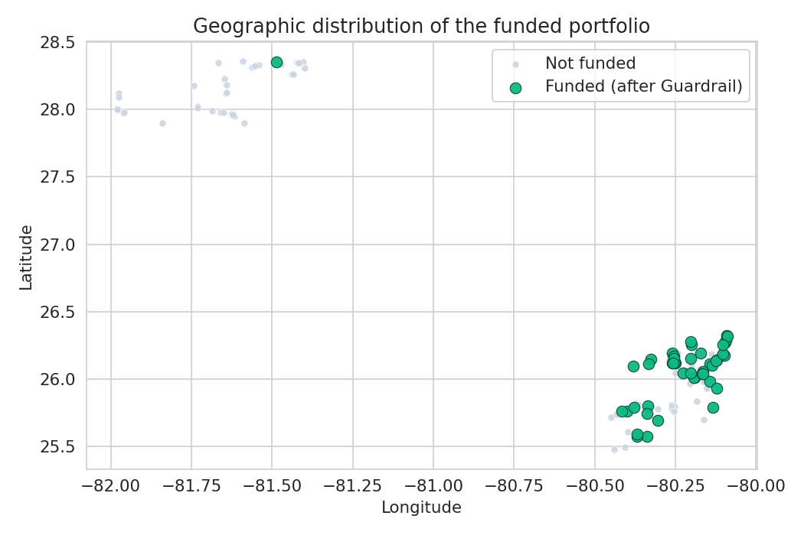
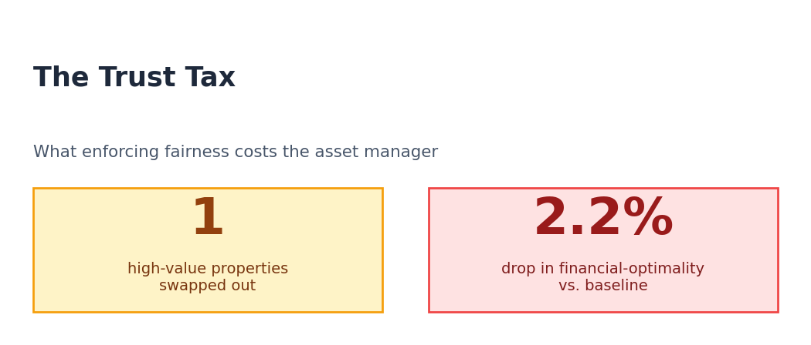

An AI was asked which Florida commercial buildings to reinforce before the next hurricane. It picked the ones in the wealthiest neighborhoods. This is the story of how we caught it, what we did about it, and what it cost.
1.The Setup
Hurricanes do not wait for budget meetings.
Picture a real estate manager in Miami at the start of hurricane season. She owns 150 commercial buildings spread across Miami-Dade, Broward, and inland Polk County. She has enough money this year to reinforce the roofs and windows on 45 of them. The other 105 will face the next storm with whatever they have now.
Choosing which 45 is hard. So she does what most large managers now do. She hands the problem to an AI. The AI pulls in flood zone maps from FEMA, wind exposure data from engineering codes, the income of every property, and the cost to insure each one. Then it produces a ranked list. Top of the list gets reinforced. Bottom of the list does not.
This sounds objective. The AI does not see race. It does not see income directly. It only looks at numbers like "value at risk" and "wind speed in mph." But there is a problem hiding in plain sight, and it is the reason we built this whole project.
The hidden trap
First, a quick clarification. The asset manager owns commercial real estate, not houses. We are talking about strip malls, office parks, retail centers, warehouses, and corner stores. None of these buildings are themselves "wealthy" or "working class." But the neighborhoods they sit in are. A strip mall in a high-income beachfront tract behaves very differently from a strip mall in a working-class inland tract, even if the buildings look identical on a satellite image.
Wealthy neighborhoods in Florida sit on more expensive commercial buildings, because rents and sale prices track local incomes. The AI is told to weight financial exposure heavily, because losing a $20 million building hurts the portfolio more than losing a $5 million one. So when the AI looks at the numbers, the buildings in wealthier tracts always come out on top. The buildings in working-class tracts next door, often facing the same hurricane or worse, end up at the bottom of the list.
Why this matters for actual people
The harm is not "the building owner loses some rent money." The harm flows through to the residents who depend on those buildings every day. Here are three concrete examples of what happens when a commercial building in a working-class neighborhood does not get reinforced and the next storm takes it out:
The corner pharmacy. A Quartile 2 strip mall in inland Polk County houses the only chain pharmacy for several miles. After the storm tears off its roof, the building is closed for six months. Residents on diabetes or blood pressure medication now have to drive 20 miles to refill prescriptions. Many do not have cars, and the local bus route was also disrupted.
The neighborhood grocery. A small grocery store in a Quartile 1 tract serves a community where most households shop for food two or three times a week, in small amounts, because the apartments do not have large refrigerators. After the storm, the store loses power and inventory and stays shut for weeks. The nearest alternative is a gas station that sells chips and soda. Food insecurity in the tract spikes.
The urgent care clinic. A medical office in a working-class Miami-Dade tract is the only walk-in clinic that takes Medicaid in the area. The roof gives way during the storm. For the next year, residents with workplace injuries, sick kids, and untreated chronic conditions either go to a hospital ER (expensive, slow) or skip care entirely.
Now imagine the parallel scenario in a Quartile 4 beachfront tract. A high-end restaurant or a boutique loses its windows, but the residents have cars, savings, and choices. They drive to the next neighborhood. They are inconvenienced. The working-class community in the first scenario loses access to medication, food, and basic medical care for weeks or months.
This is what the AI is quietly choosing every time it follows financial exposure: it is choosing whose corner pharmacy reopens on day three after the storm and whose stays shut for half a year. That is why the standard for "good enough" here has to be much higher than for a Netflix recommendation. This is not a movie pick. It is community infrastructure.
2.What the AI Actually Sees
Before you can judge the decision, you have to know what the decision was made from.
The AI is not magic. It looks at a small set of numbers for each of the 150 commercial buildings and produces a score. To understand why it favors the buildings in wealthier neighborhoods, you have to look at the inputs. Some of these come from real public APIs. Some are synthetic but built on top of real public APIs. We were careful about which is which, because the trust in the whole report depends on it.
The real, live, public data
Four pieces of information for every building come straight from official sources, fetched at pipeline run time:
What
Where it comes from
Why it matters
Building location and type (latitude, longitude, commercial / office / retail tag)
OpenStreetMap, queried via the Overpass API. We pull buildings inside the bounding boxes of Miami-Dade, Broward, and Polk counties.
Real coordinates mean we are scoring real buildings in real neighborhoods, not points on an abstract grid.
Census tract assignment (the FIPS code that maps a coordinate to a neighborhood)
FCC Area API. We give it a lat / lon, it returns the state, county, and tract code.
This is the bridge that lets us pull real neighborhood demographics for any random building we found on the map.
Median household income and minority percentage for the tract
US Census Bureau, ACS 5-Year Estimates (2022). Specifically variables B19013_001E for income, and B02001_001E and B02001_002E for the racial composition.
These are the protected attributes the audit cares about. They are not used by the scoring AI directly, but they are what the fairness metric measures against.
FEMA flood zone (VE, AE, or X)
FEMA National Flood Hazard Layer, queried via the ArcGIS REST API for the building's exact coordinates.
This is the strongest piece of physical risk data in the system. VE is the highest coastal hazard, AE is moderate, X is minimal.
So when the report says a building sits in flood zone VE with $158,984 median neighborhood income, those numbers came directly from FEMA and the Census Bureau. None of it is invented.
The synthetic data, and why it is honest synthetic
Three more pieces of information are synthetic, because the real versions are locked behind expensive commercial data providers. Per-property wind ratings sit behind CoreLogic and RMS. Real property values, net operating income, and insurance premiums sit inside private property management systems like Yardi and MRI. We could not get those for a course project. So we built them, but we built them in a way that preserves the bias signal.
What
How we generated it
What is honest about it
Wind risk (mph)
Random uniform draw. Coastal counties (Miami-Dade, Broward) get 150 to 185 mph. Inland Polk gets 110 to 140 mph.
The coastal versus inland gap matches the real ASCE 7 wind exposure pattern. The exact mph value for any given building is made up.
Property value
A formula: 5M × county_multiplier × (real_income / 60K) × random_noise. Coastal counties get a 1.3 multiplier, inland gets 0.8.
The value is mathematically driven by the real Census income for the tract. So commercial buildings in wealthy neighborhoods come out expensive, exactly as they would in reality. This is the input that creates the bias the report is investigating.
Net Operating Income and insurance premium
NOI is a random cap rate (5 to 8 percent) of the property value. Insurance is a percentage of value, scaled up sharply for buildings in real FEMA flood zone VE.
Both are derived from the property value, which itself is driven by real income. Insurance is also a real function of the real flood zone. So the financial cost of risk tracks the real geography.
Which numbers feed the AI's decision
This is the important part. The scoring AI never sees income or race. It only sees four numbers per building: flood_zone, wind_risk_mph, noi, and insurance_premium. From those four, it produces a physical risk score (60 percent weight) and a financial exposure score (40 percent weight), then ranks the portfolio.
Two of the AI's four inputs are real (flood zone, the structure of wind risk by county) and two are synthetic but anchored to real Census income (NOI, insurance premium). The income and minority percentage are held aside for the audit only. They never touch the AI itself. That is what makes the bias finding meaningful: the AI can produce a demographically skewed list without ever being told a single demographic fact, just because the financial signals it does see are spatially correlated with wealth.
Why this matters for trust. A common defense of automated decision systems is "the AI does not see race or income, so it cannot be biased." This project is a working counter-example. Every input the AI uses is either a real public number or a number derived from real public information, and the AI still produces a list that systematically favors wealthier neighborhoods. The bias does not come from a bad input. It comes from how the inputs are weighted and how those inputs correlate in the real world.
3.How Do You Even Measure "Fair"?
You cannot just count who got picked. You have to ask why.
Our first instinct was simple. Look at how often the AI picked commercial buildings from high-income tracts versus low-income tracts. If the high-income tracts got picked far more often, that is bias. Right?
Not quite. A reasonable manager will push back on that argument. She will say, "Of course buildings in wealthier tracts get picked more. They are on the coast. That is where hurricanes hit hardest. You cannot blame the AI for picking the buildings that are in actual danger."
That is a fair point, and we needed a measurement that handled it. So we built one and gave it a plain name: the Risk-Adjusted Gap.
The idea is straightforward. We ask, "If we ignored money completely and only looked at the storm risk, who would the system fund?" Then we compare that imaginary list to the real one. If a group is funded much less often than pure storm risk would say they should be, that is the part of the gap money cannot explain. That is the part that should make us nervous.
This metric maps cleanly to what trust actually means here. A regulator, a journalist, or the manager herself can look at the gap for each income group and ask the only question that matters in this domain: "Is this difference defensible because of weather, or is it a side effect of how we weighted the dollars?"
How we built it, in code
We used a small logistic regression. The model takes one input per building (its physical risk score, computed from FEMA flood zone and ASCE wind exposure) and learns the relationship between that risk and whether the AI chose to fund the building. Once the model is trained, we ask it the question we actually care about: "Forget what the AI did. Based purely on storm risk, what is the probability this building would be funded?" Then we compare that probability to what the AI actually picked, group by group.
# Step 1. Train a tiny model that predicts "was this building funded?"# using ONLY the physical_risk_score (FEMA flood zone + ASCE wind) as input.# Income, value, NOI are deliberately excluded.
X = df[["physical_risk_score"]]
y = df["funded_baseline"].astype(int)
model = LogisticRegression(class_weight="balanced")
model.fit(X, y)
# For each building, this gives the probability it WOULD have been funded# if storm risk were the only thing that mattered.
df["risk_justified_prob"] = model.predict_proba(X)[:, 1]
# Step 2. For each income group, compare actual to risk-justified.# Negative gap means the group is under-funded relative to its real storm risk.
for q in [1, 2, 3, 4]:
sub = df[df["income_quartile"] == q]
actual_rate = sub["funded_baseline"].mean() # what the AI picked
justified = sub["risk_justified_prob"].mean() # what storm risk alone would pick
gap = actual_rate - justified
print(f"Q{q}: gap = {gap:+.1%}")
That is the whole idea. A one-feature logistic regression gives us the storm-risk-only baseline, and a simple loop turns that into a per-group gap number. The full implementation lives in src/audit_pipeline.py. Note one important detail: income and minority percentage are nowhere in the model. The metric is built only from physical risk and the AI's own decisions. That keeps the comparison clean, because the demographic numbers stay reserved for the audit itself rather than getting tangled into the baseline.
4.What the AI Actually Did
Real properties, real Census data, real FEMA flood zones, a live AI agent stack.
We pulled 150 commercial buildings from OpenStreetMap across three Florida counties and tagged each one with its real neighborhood income from the US Census, its real FEMA flood zone, and a realistic wind and financial profile. Then we ran the multi-agent AI pipeline (it uses LangGraph and a hosted LLM called kimi-k2-thinking) and let it pick its top 30 percent.
150Properties scored
45Funded by the AI
30%Portfolio average rate

The baseline AI funds properties from the highest-income neighborhoods (Quartile 4) more than twice as often as the second-lowest group. The dashed red line is the portfolio average of 30 percent.
The picture matched what we worried about. The wealthiest group of neighborhoods got funded 45 percent of the time. The second-lowest group got funded only 18 percent of the time. By itself, though, this chart cannot prove bias, because the manager's "they live on the coast" argument still applies. So we ran the Risk-Adjusted Gap on top of it.

This is the gap between what the AI actually did and what pure storm risk would have done. Quartile 4 lands close to where risk would put it. The lower-income groups land far below.
The pattern. When the AI deviates from a pure-storm-risk allocation, it deviates against the lower-income groups. Quartile 4 is funded almost exactly in line with risk. Quartile 2 falls the furthest behind. The direction is unambiguous: the AI is making decisions that favor commercial buildings in wealthier tracts beyond what the actual storm exposure would justify.
5.Five Predictions, Written Before We Ran It
It is too easy to find a failure after the fact. So we wrote down what we expected first.
Before we ran the LLM on the data, we wrote down five specific failure cases we predicted the system would produce. This protects us from cherry-picking. Three of the five played out as predicted, one was confirmed in aggregate, and one was mixed.
#
What we predicted
What happened
1
A high-value building in a low-flood zone would beat a low-value building in the same flood zone with similar wind exposure.
Confirmed. Found in the Miami-Dade slice.
2
A building in a working-class tract with higher wind risk than a building in a wealthy tract would still be ranked below it.
Confirmed. A 170 mph building landed at rank 88. A 165 mph building landed at rank 1.
3
Inland Polk County would be systematically under-funded versus the coastal counties.
Confirmed in aggregate.
4
A moderate-flood-zone building in a low-income tract would beat a low-flood-zone building in a high-income tract.
Mixed. Sometimes, but financial exposure usually still won.
5
The income gap would be sharper than the racial gap, because Florida geography links income and coast more tightly than race and coast.
Confirmed.
The clearest single failure was prediction number two. The AI was choosing between two retail buildings in Miami-Dade, both in the same low-flood zone. One sat in a high-income Census tract, the other in a working-class one. Here is what the inputs looked like.
Metric
Funded (in wealthy tract)
Ignored (in working-class tract)
Neighborhood income
$158,984 (Q4)
$72,258 (Q2)
Wind risk
165.1 mph
170.7 mph
Property value
$18,315,987
$7,203,968
Final AI rank
#1
#88
The ignored building actually faced a stronger storm. The funded building was simply worth more. The AI followed the money and ignored the wind. That is the bias in a single line.
6.What We Did About It
We chose the most boring fix on purpose, because boring is auditable.
We thought about three ways to fix this. We rejected two of them.
The first option was to ask the AI to "be fair" in its prompt. We rejected this because LLMs are slippery when you give them moral instructions. You ask for fairness and you get something different every run, and you cannot explain to a regulator afterward what changed and why.
The second option was to retrain the AI on rebalanced data. We rejected this because we do not own the training data, and faking the financial inputs would distort the very signal the manager is paying for.
The third option, the one we picked, is a small filter that runs after the AI has finished. We call it the Parity Guardrail. It looks at the AI's list of 45 funded properties, checks the funding rate for each income group, and asks, "Is any group falling more than 10 percent below the portfolio average?" If yes, it swaps out the lowest-priority funded property from an over-represented group and replaces it with the highest-priority unfunded property from the under-represented one. It keeps doing this until everyone is back inside the fairness band, or until no clean swap is possible.
The whole thing is one page of Python. Every swap is logged. The manager can see exactly which property was dropped and which one took its place, and they can adjust the tolerance from 1 percent up to 20 percent right inside the dashboard.
7.What Changed After the Fix
The numbers, then a real example.

The Guardrail nudges Quartile 2 up and Quartile 4 down. Quartiles 1 and 3 were already inside the fairness band, so nothing changed for them.
After the Guardrail ran, every group was inside the 10 percent fairness band. Here are the four numbers in plain form.
Income Quartile
Baseline AI
After Guardrail
Change
Q1 (lowest income)
26.3%
26.3%
no change
Q2
18.4%
21.1%
+2.7 pts
Q3
30.6%
30.6%
no change
Q4 (highest income)
44.7%
42.1%
-2.6 pts
The actual swap, in plain English
On this run, the Guardrail made exactly one swap. Here is what happened in real terms. The Guardrail removed an office building sitting in a Quartile 4 (high-income) tract in Broward that the AI had funded at rank 42 of 45. That building had only modest financial exposure and sat in a low flood zone, so it was not a strong pick to begin with. In its place, the Guardrail added a retail building in a Quartile 2 (working-class) tract in Miami-Dade. That building sat at rank 47, one spot below the funding cutoff, but it was in a moderate flood zone and faced 168 mph winds. The neighborhood it sits in includes a small grocery store and a check-cashing place that are essential to the surrounding apartments. In other words, the Guardrail did not pick a random building from a low-income tract. It picked the building that the storm risk had already been quietly screaming about, in a community that had the most to lose if it went down.

The funded properties (green) after the Guardrail. Most are still in Miami-Dade and Broward, but one inland Polk property now appears on the list. That is the fix doing exactly what it was built to do.
8.What the Fix Cost
Fairness is never free. Here is the bill, with no spin.

On this portfolio, the Guardrail swapped one property. The total drop in "financial efficiency" was 2.2 percent. That is the cost. It is real, but it is small, and it is the kind of cost a manager can defend in a meeting by saying, "We accepted a 2 percent reduction in financial optimality to keep our funding inside a fairness band our regulator and our community can understand."
That is the headline cost. There are smaller costs too, and we want to be honest about them.
Speed and compute. Almost zero. The Guardrail runs in milliseconds. The AI calls take seconds. The Guardrail is a rounding error on top.
What it covers. The Guardrail enforces fairness across income quartiles only. It does not directly enforce fairness across race, county, or building type. The dashboard surfaces those numbers, but the swap algorithm does not act on them.
How clear it is. Very clear. Every swap is logged. A manager or a regulator can read the log and see exactly what changed.
The risk of false comfort. This is the biggest hidden cost. A manager could look at "all four groups are inside the band" and conclude the AI is fixed. The truth is that the Guardrail clamps the symptom. It does not change the underlying scoring logic. The bias is still there. The Guardrail is a seatbelt, not a cure.
Who is still left out
Even after the fix, three groups of communities are still vulnerable. First, a building that serves a working-class community but happens to sit just inside a wealthy Census tract (think of a laundromat right at the boundary line of two very different neighborhoods) gets coded as Quartile 4 and never triggers a swap. Census boundaries are blunt tools, and a building can sit on the wrong side of one. Second, the Guardrail does not optimize across race, county, or owner-occupancy. Disparities along those lines can persist even when the income chart looks fine. Third, in any given year the LLM might happen to produce an allocation that just barely sits inside the fairness band even though the bias is still there. The Guardrail only fires when something visibly breaks. Quiet, persistent bias inside the tolerance band can go unnoticed for years.
9.What We Built and Where We Borrowed
Standing on shoulders, with full attribution.
We did not invent the underlying agent stack. We started from the LangGraph multi-agent template (open source) and the Nvidia NIM hosted endpoint for the LLM (moonshotai/kimi-k2-thinking). What we built ourselves is the Risk-Adjusted Gap metric, the Guardrail, the Streamlit dashboard, the synthetic data pipeline that ties values to real Census income, and the evaluation in this report.
The intervention itself is informed by published work in algorithmic fairness:
Aaronson et al. (2021) on algorithmic redlining in mortgage and insurance pricing. The closest analogue to what we observed in commercial real estate.
Corbett-Davies and Goel (2018) on the limits of plain demographic parity when underlying risk really does differ between groups. This is the intellectual basis for the Risk-Adjusted Gap.
Zehlike et al. (2017), the FA*IR ranking algorithm. The design pattern behind our greedy swap Guardrail.
Menon and Williamson (2018) on the cost of fairness. The framing for what we call the cost section above.
Mitchell et al. (2019) on Model Cards. The disclosure-first philosophy behind logging every swap.
Selbst et al. (2019), "Fairness and Abstraction in Sociotechnical Systems." A useful reminder that no post-processing layer can substitute for involving the affected community in the design of the system in the first place.
The bottom line. A small filter sitting on top of the AI brought its decisions into a defensible fairness band, and the Risk-Adjusted Gap underneath made the bias visible in the first place. The fix cost about 2 percent of the AI's "optimal" financial efficiency. The bigger contribution, though, is not the swap algorithm. It is the audit protocol that makes the AI's decisions readable, challengeable, and reproducible. That is what trust actually looks like in practice.